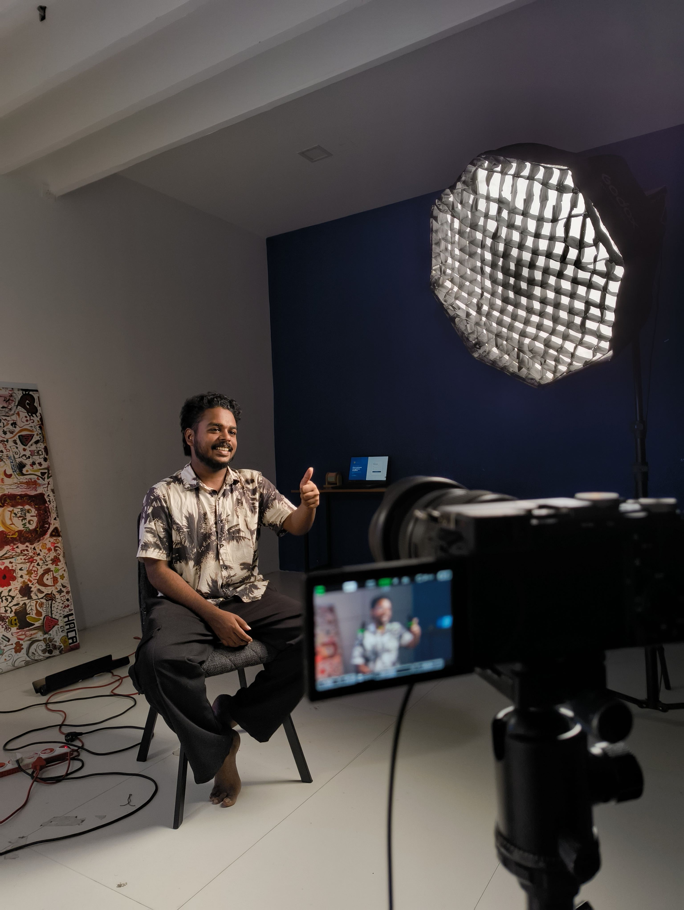

BEHIND THE BUILD↙
VAISHNAV MURUKANKERALA, INDIA ↗
A little curiosity.
A lot of building.
FULL STACK DEVELOPER · GENERATIVE AI
Ideas are
good.
Built is
better.
I’m Vaishnav. I connect thoughtful interfaces, solid backends, and AI to turn interesting problems into working products.
↙DJANGOREACTGEN AISCROLL TO EXPLORE ↓
THINK IT THROUGH. ✳ BUILD IT OUT. ✳ MAKE IT MATTER. ✳ THINK IT THROUGH. ✳ BUILD IT OUT. ✳ MAKE IT MATTER. ✳
01 / SELECTED WORK
From “what if”
to here it is.
Public-service tools, intelligent systems,
and the occasional delightfully odd idea.
CROWDSHIELD / SYSTEM STUDY
+
See the crowd.
Understand the risk.GPS → VISION → INSIGHT
CONCEPT VISUAL01 — APPLIED AI / DJANGOCrowdShield
A crowd-monitoring and safety dashboard connecting GPS check-ins, computer vision, risk classification, and anomaly detection.
PythonDjangoYOLOv8Machine learning
Explore the repository ↗
JANSEVA / CIVIC TECHNOLOGYA citizen’s voice ↗A clearer workflow ↗A step forward ↗
CONCEPT VISUAL 02 — UI/UX / TEAM PROJECT↗
JanSeva
UI/UX design for a citizen complaint platform, from the citizen experience to an MLA dashboard. A team project bringing public grievances into a clearer workflow.
Project updates on LinkedIn ↗
OVERTHINKER / AI EXPERIMENTThey said “okay.”
But what does it mean?
What if…↺
CONCEPT VISUAL 03 — GENERATIVE AI / EXPERIMENT↗
Overthinker
A playful AI experiment that turns an everyday situation into an overthinking spiral. Built with Lovable while exploring prompts, interface design, and AI-assisted development.
The story behind the build ↗02 / THE PERSON BEHIND THE CODECuriosity is
the common thread.
✳
I like the space where
logic meets imagination.
I’m a full stack developer based in Kerala, India, working with Django, React, and generative AI. I enjoy carrying an idea across the whole stack — from what someone sees to what makes it work.
My interests cross interfaces, AI experiments, and tools for real-world problems. Whether it’s a civic platform or a playful side project, I like learning by making something tangible.
01The foundationPython · Django
02The experienceReact · UI/UX
03The possibilitiesGenerative AI · Prompt engineering